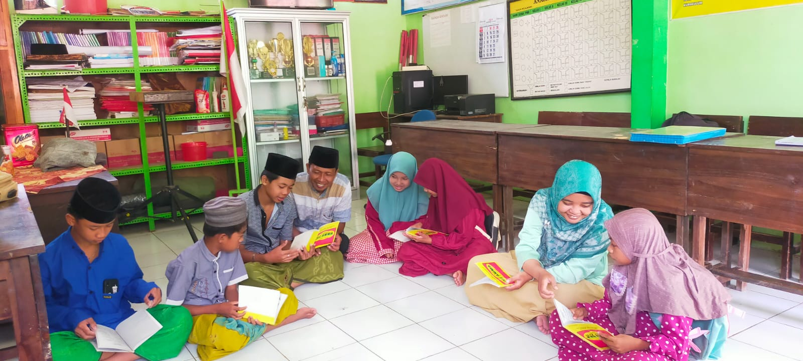
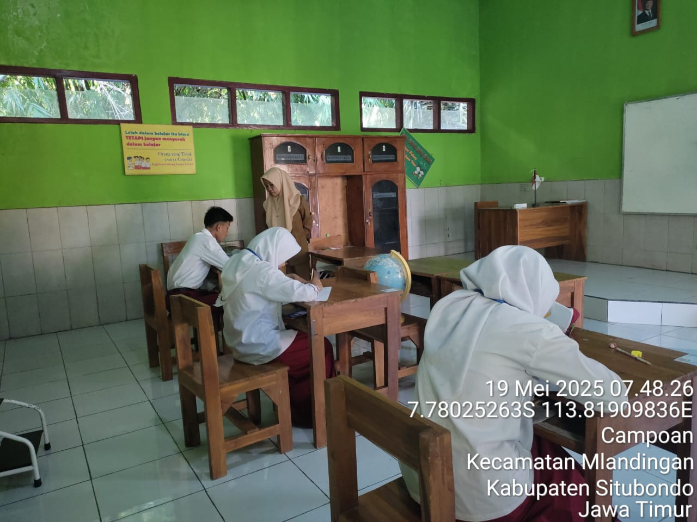
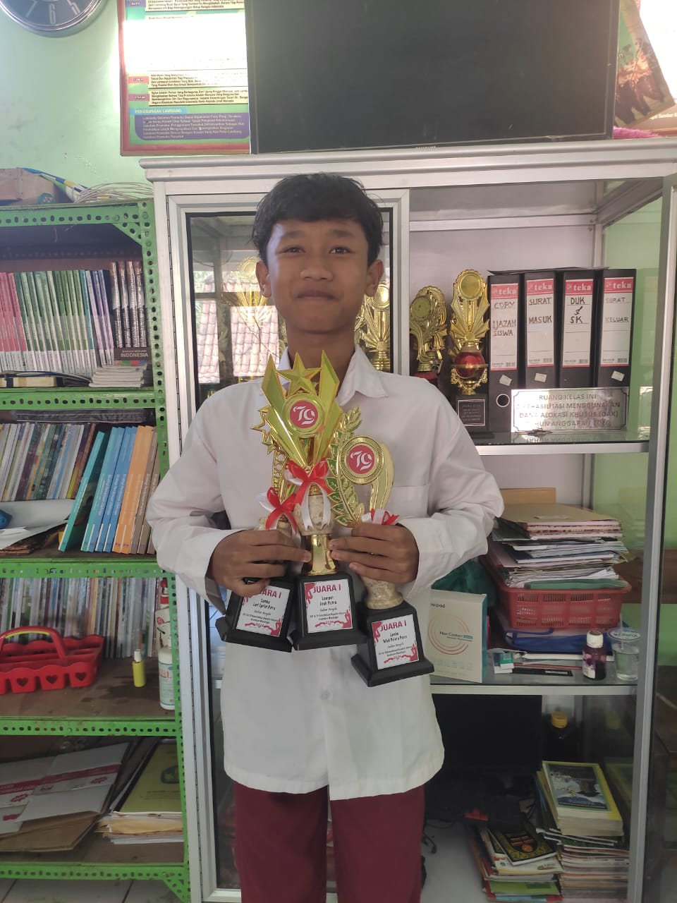

Selamat Datang di Website Resmi SD Negeri 1 Campoan
Website ini menyajikan informasi seputar kegiatan, prestasi, dan berita terbaru dari SD Negeri 1 Campoan. Sekolah berkomitmen memberikan layanan belajar yang bermutu, ramah anak, dan sesuai dengan karakter serta potensi lokal pedesaan pegunungan.
Profil Sekolah
Nama Sekolah: SD Negeri 1 Campoan
Alamat: Jl. G. Malang No.38 Kp Plalangan, Desa Campoan
Visi: Mewujudkan sekolah yang bermutu, ramah anak, dan berdaya saing dengan menjunjung nilai karakter serta kearifan lokal pedesaan pegunungan.
Misi:
- Menyelenggarakan layanan pendidikan yang berkualitas, ramah anak, dan berorientasi pada kebutuhan serta potensi siswa.
- Menanamkan nilai-nilai karakter luhur, cinta lingkungan, dan kearifan lokal.
- Meningkatkan kerja sama dengan masyarakat untuk mendukung pendidikan yang relevan dengan kehidupan pedesaan pegunungan.
- Meningkatkan Kualifikasi Pendidikan Guru dan Kualitas Guru, Tenaga Kependidikan sesuai yang dimasyarakatkan termasuk Program Sertifikasi Kompetensi Guru.
- Memenuhi Kebutuhan Sarana dan Prasarana Pendidikan Serta Tenaga Pendidik dan Tenaga Kependidikan Sekolah.
- Mengembangkan keterampilan siswa melalui pembelajaran yang kreatif, inovatif, dan berbasis potensi alam sekitar.
- Mengembangkan Teknologi Informasi.
Informasi Terbaru
- 📌 Ujian Akhir Tahun dimulai tanggal 10 Juni 2025.
- 🎓 Pengumuman Kelulusan diumumkan pada 2 Juni 2025.
- 🌳 JUMSIROH (Jumat Siswa dan Guru Membaca Surat Pendek Rohani).
Galeri Sekolah


JUMSIROH (Jumat Siswa dan Guru Membaca Surat Pendek Rohani)
Pembelajaran Berbasis TIK
Pelaksanaan ASAS
Trichampion Atletik
Kontak Kami
Email: admin@sdn1campoan.sch.id
Telepon: 082302484247
Facebook: facebook.com/SD Negeri1campoan